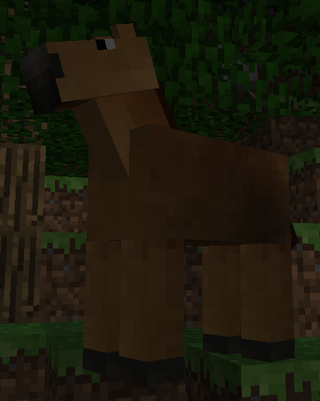
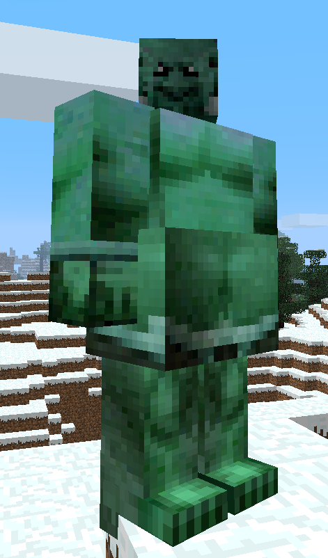
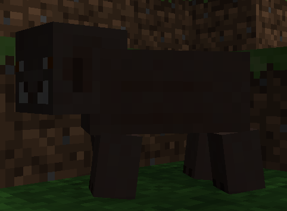
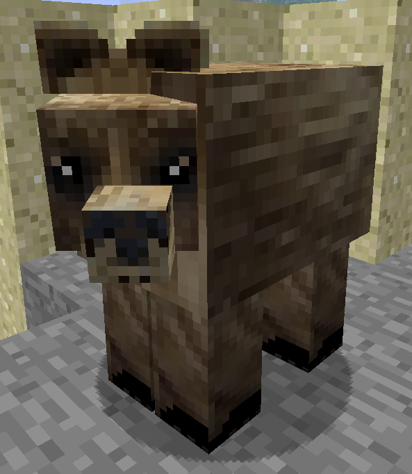
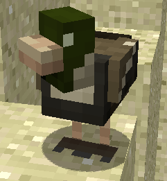
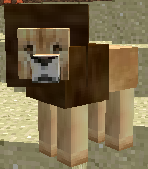
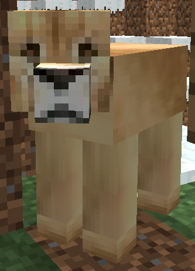
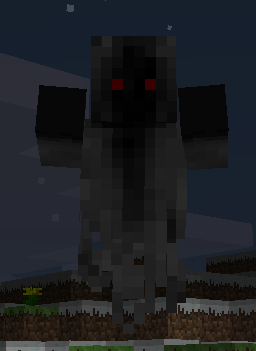
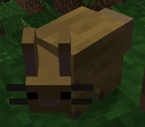
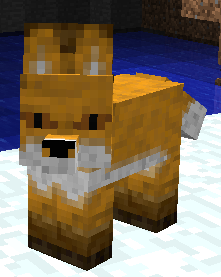

Mo' Creatures v2.5.4
Items in this Version:
Mobs in this Version:
Horse


Horses are a passive mob, you can put a Horse Saddle on them and ride them around.
Ogre

Ogres spawn at night, they destroy blocks in a tantrum and attack the player. During the day they are neutral.
Fire Ogre
Cave Ogre
Boar

Boars are neutral mobs and will attack the player seemingly at random.
Bear

Bears are neutral mobs, and will attack wild animals. Bears will fight back if harmed.
Duck

A passive mob.
Lions
Lions spawn in a group of 2, a Lion and a Lioness. They are hostile toward the player.
Lion

Lioness

Wolf
Wolves spawn at night, and are hostile toward the player.
Polar Bear
Wraith

Wraithes spawn at night, and are hostile toward the player.
Flame Wraith
Bunny

A passive mob.
Bird
Birds provide ambiance to the world.
There are 5 variants of Birds.
White

Red

Blue
Black

Yellow

Fox

Foxes are a neutral mob that attack bunnies. They will also attack the player.
Werewolf
Werewolves are a hostile mob that spawn at night. They run on all fours, and walk on two legs.